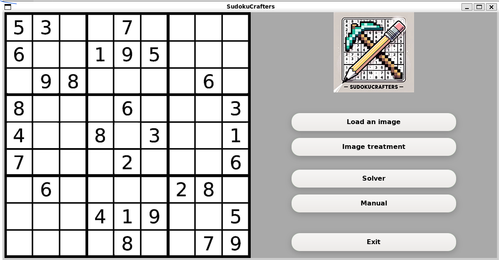
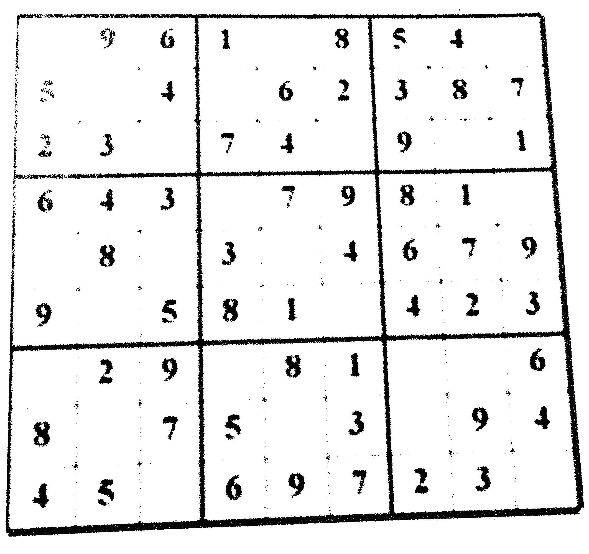
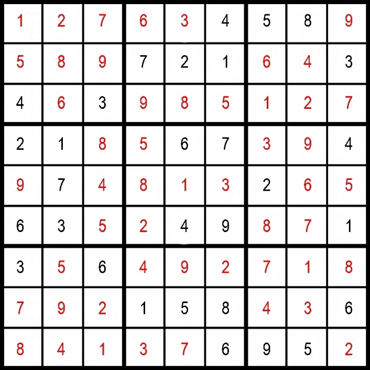

- Manual rotation and removal of colors
- Sudoku grid and square detections
- Cropping the image
- Sudoku solving
- Beginning of the neural network
- Reconstruction of the grid and saving the result
Some pictures



